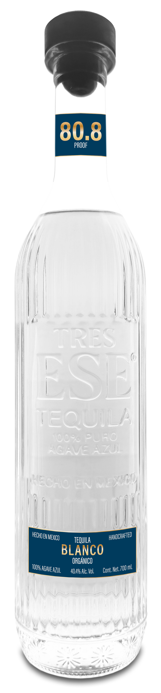
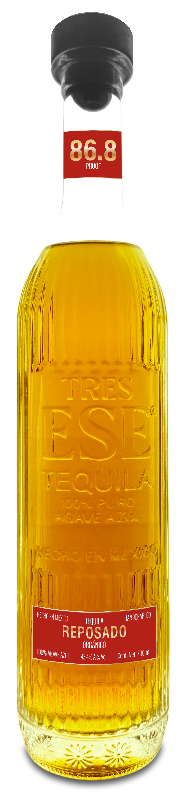

01 · Blanco
Blanco Orgánico
700 ml · 40.4% · 80.8 Proof
Same content, same brand voice, same slideshows. Three different visual treatments. Scroll through each one and pick the one that feels right. I'll roll the chosen direction out across the live site.
Dirección 01
Dark cellar palette as the primary background. Cream and gold as accents. Intimate, candle-lit, premium — think Glenmorangie, Hennessy, the back room of a Mexico City speakeasy at 11pm. The bottles glow against the dark.
Tequila Orgánico · Desde 1905
El agave más alto, la cocción más lenta, la familia más paciente. Cinco generaciones en una sola tierra.
DescubrirCinco generaciones, una sola tierra: la sierra alta de Jalisco a 2,030 metros, donde el agave azul crece más lento, más dulce y más concentrado.
Cocemos lentamente en hornos de mampostería; fermentamos en madera, sin levaduras añadidas; destilamos en cobre dos veces. Nada se añade después. Nada se acelera.
Las Botellas

01 · Blanco
700 ml · 40.4% · 80.8 Proof

02 · Reposado
700 ml · 43.4% · 86.8 Proof

03 · Extra Añejo
700 ml · 44.4% · 88.8 Proof
Dirección 02
Cream base with dramatic black breaks. Oversized Playfair display type, numbered eyebrows ("Nº 02"), drop caps, pull quotes. Reads like a Vogue Mexico spread or a NYT Magazine cover story. Most "designed" of the three — confident, premium, contemporary.
Volumen 1 · Junio 2026
El agave azul crece más lento aquí — a 2,030 metros, en tierra roja, bajo el sol blanco de Los Altos de Jalisco. Lo dejamos crecer. No nos apuramos.
Probar el Reposado«El tiempo es el único ingrediente que no podemos comprar.»
— Familia Tres Ese · Cinco Generaciones
01
El Origen
Desde 1905, la familia Tres Ese cultiva agave azul en la tierra roja de Los Altos de Jalisco. Sin atajos. Sin aditivos. Sin prisa. Cada lote depende del cielo de ese año — la lluvia, el sol, el viento que cruza la sierra.
Cocemos lentamente en hornos de mampostería. Fermentamos en madera, sin levaduras añadidas. Destilamos en cobre dos veces. Nada se añade después.
02
— Nº 01 —
700 ml · 40.4% Vol
— Nº 02 —
700 ml · 43.4% Vol
— Nº 03 —
700 ml · 44.4% Vol
Dirección 03
Keeps the warm cream base, but each bottle gets its OWN accent color woven through its block — mineral blue for Blanco, amber whiskey for Reposado, deep mahogany for Extra Añejo. The site stops feeling like one tone and starts feeling like a real range. Most conservative of the three; closest to your current site, just more dynamic.
Tequila Orgánico · Tres Expresiones
Un solo agave. Una sola tierra. Tres momentos en el tiempo.
Mineral · Cítrico
Roble · Cedro · Especia
Cacao · Cuero · Roble Añejo
Nuestra Historia
Desde 1905, la familia Tres Ese cultiva agave azul en la tierra roja de Los Altos de Jalisco, a 2,030 metros. Sin atajos. Sin aditivos. Solo agave, fuego, madera, cobre y tiempo.
Cada lote es pequeño porque cada lote depende del cielo de ese año — la lluvia, el sol, el viento que cruza la sierra.
El Proceso
01
Agave azul orgánico, 7 años, tierra roja a 2,030 m.
02
Hornos de mampostería, 72 horas a fuego lento.
03
Tinas de madera, levaduras silvestres, sin prisa.
04
Doble destilación en alambique de cobre.
Dirección 04 · Remix
Cream base + per-bottle accent colors (Blanco·mineral, Reposado·amber, Extra Añejo·mahogany), wrapped in Playfair display boldness, punctuated by two dark cellar bands for visual rhythm. Asymmetric magazine layouts, drop caps, italic colored emphasis. The most "designed" of the four — feels like a launch issue of a niche tequila magazine.
El agave azul crece más lento aquí — a 2,030 metros, en tierra roja, bajo el sol blanco de Los Altos de Jalisco. Lo dejamos crecer. No nos apuramos.
El reposado, seis meses descansando en roble francés.
«Un solo agave. Tres expresiones. Un tiempo distinto.»
— Familia Tres Ese · Desde 1905
01
El Origen
Desde 1905, la familia Tres Ese cultiva agave azul en la tierra roja de Los Altos de Jalisco. Sin atajos. Sin aditivos. Sin prisa. Cada lote depende del cielo de ese año — la lluvia, el sol, el viento que cruza la sierra.
Cocemos lentamente en hornos de mampostería. Fermentamos en madera, sin levaduras añadidas. Destilamos en cobre dos veces. Nada se añade después. Lo que entra al alambique es exactamente lo que sale a la botella.
02
Mineral · cítrico · piedra mojada
700 ml · 40.4% · 80.8 Proof
Roble francés · cedro · especia cálida
700 ml · 43.4% · 86.8 Proof
Cacao · cuero curtido · roble añejo
700 ml · 44.4% · 88.8 Proof
— 03 —
01
Agave azul orgánico, 7 años, tierra roja a 2,030 m.
02
Hornos de mampostería, 72 horas a fuego lento.
03
Tinas de madera, levaduras silvestres, sin prisa.
04
Doble destilación en alambique de cobre.
Reply with "01", "02", "03", or "04" and I'll roll that direction out across your live site. Or remix — tell me which elements you want from which mockup.